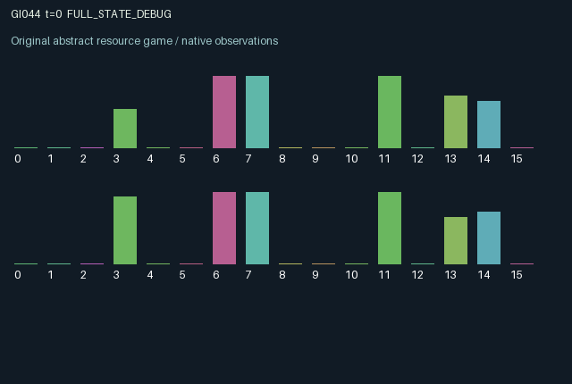

GI044 / LEGACY_ARRAY
astra-d2-00044: Reciprocal assay and delayed consignment
2 agents5 actions16 observation columns32 original horizonRuntime: PASS
Release verification episode
Untrained uniform legal actions. Actual JAX state sampled along the full original episode; full-state debug camera. No human performance or learning claim.

Run this game
crucibles play --game 44
Start Python locally, then open the address printed by the terminal. Installation, multiplayer, takeover and keyboard controls →
Objective, rewards & ending
Exact task contract
{
"termination": "Original kernel t >= 32; see mechanism and source"
}Declared per-step reward bounds: -1.0 to 1.0. Observability: source_defined.
Rules
Original mechanism document (historical status wording retained)
# astra-d2-00044: Reciprocal assay and delayed consignment Status: original parentless source proposal; no execution or isolated validation result is asserted. Each role operates one batch. Actions are wait, replace its batch, inspect the other batch, dispatch its own batch, and recharge. The owner privately observes its batch quality. Cargo, certificates, energy, and demand are visible to both roles; an inspector also retains its own dated observation of the other batch. Replacement samples fresh quality from the supplied key and invalidates the previous certificate. An inspection records the pre-transition batch quality for the other owner. Simultaneous replacement or shipping invalidates that certificate, so inspecting a batch being replaced cannot certify the new batch. Dispatch uses only a previously stored certificate. It clears the batch and stores a delivery credit and a reciprocal inspection commission for payment on the next transition. Dispatching uncertified cargo therefore destroys the cargo without producing delivery value. Congestion depends on joint dispatch activity and decays across steps; it reduces both shipment and commission amounts. Both owners can delay, facilitate, or spoil the other's production sequence through inspection timing and congestion. Resource costs constrain repeated interventions even though all action indices are legal; insufficient-energy actions become ineffective. Rewards pay the previous transition's pending delivery plus commission and subtract current preparation, inspection, and dispatch costs. Delivery is at most 0.72 and commission at most 0.16 per role, before congestion reduction; the explicit clipping enforces [-1, 1]. New shipment credits created on the terminal transition remain in the terminal state and are not settled after the 32-step horizon. The finite horizon therefore makes timing consequential. The 16 observation columns are normalized time, own and other cargo, own private quality, own and other certificates, own and other energy, own pending delivery, own pending commission, privately retained other-quality measurement, its normalized age, congestion, own and other demand, and own preceding reward. Other-quality measurements are stale after replacement; public certificates can partially reveal quality when issued. This combines familiar production, third-party quality assurance, perishable certification, and queued settlement ideas. The distinguishing proposal is their explicit temporal dependency: reciprocal inspection certifies one pre-transition batch, replacement cancels it, and dispatch creates credits with joint congestion before delayed payment. It is not claimed to be mathematically nonisomorphic to other tasks, operationally eligible, compilable, or effective for learning. No parent source, benchmark source, feedback capsule, or outcome was supplied.
Commands
0Action 0; see mechanism and source
1Action 1; see mechanism and source
2Action 2; see mechanism and source
3Action 3; see mechanism and source
4Action 4; see mechanism and source
Roles & abilities
agent_0 Original legacy agent; see mechanism and source
agent_1 Original legacy agent; see mechanism and source
Observation permissions
Training receives only the original observation rows. Role cameras use declared visibility; debug cameras are explicitly marked. Local benchmark records log debug exposure and role takeover history.
Exact observation layout
[]
Entity visibility & attributes
[]
Actual verification & provenance
Per-game execution receipt
{
"game": "gi044",
"status": "PASS",
"verification_revision": 2,
"source_sha256": "c4e29f6d6605a361a63ace43503d53096b517a554cb8f4cb86207c831af74157",
"seed": 20261101,
"runtime": {
"jax": "0.4.38",
"numpy": "1.26.4",
"devices": [
"TFRT_CPU_0"
]
},
"dimensions": {
"num_agents": 2,
"observation_size": 16,
"num_actions": 5,
"max_steps": 32
},
"checks": {
"eager_reset": {
"status": "PASS",
"seconds": 0.3049139976501465
},
"observation_spaces_legal_masks": {
"status": "PASS",
"seconds": 0.12550806999206543
},
"eager_step": {
"status": "PASS",
"seconds": 0.47987818717956543
},
"jit_reset": {
"status": "PASS",
"seconds": 0.21835827827453613
},
"jit_step": {
"status": "PASS",
"seconds": 0.20552730560302734
},
"eager_jit_integer_parity_float_measurement": {
"status": "PASS",
"seconds": 0.00099945068359375
},
"jit_vmap_reset": {
"status": "PASS",
"seconds": 0.36806297302246094
},
"jit_vmap_step": {
"status": "PASS",
"seconds": 0.33234739303588867
},
"outer_autoreset_api": {
"status": "PASS",
"seconds": 0.4723060131072998
},
"full_original_horizon_episode_and_render": {
"status": "PASS",
"seconds": 1.969569206237793
}
},
"human_scores": null,
"browser_controls": "PENDING",
"failures": [],
"elapsed_seconds": 4.834906339645386,
"float_parity_max_abs": 0.0,
"numerical_parity": "EXACT",
"raw_terminal_absorbing": "NOT_PART_OF_ORIGINAL_LEGACY_CONTRACT",
"terminal_outer_reset": "PASS",
"episode_steps": 32,
"scripted_random_returns": [
-0.3822646215558052,
-0.34290531277656555
],
"terminal": true,
"demo_information": "FULL_STATE_DEBUG",
"demo_frames": 33,
"render_roles_checked": 2
}Chromium control verification
{
"game": "gi044",
"status": "PASS",
"human_scores": null,
"engineering": true,
"checks": [
"catalog_selected_and_real_native_reset",
"dom_queue_and_native_step",
"second_participant_ownership_and_native_joint_step",
"all_roles_individually_controllable_no_role_cap",
"explicit_debug_camera",
"release_to_pure_ai_without_reset"
],
"seconds": 2.6424431800842285
}Original identity and file hashes
{
"id": 44,
"key": "gi044",
"title": "astra-d2-00044: Reciprocal assay and delayed consignment",
"summary": "",
"tags": [],
"family": "legacy_array",
"dimensions": {
"num_agents": 2,
"observation_size": 16,
"num_actions": 5,
"max_steps": 32
},
"source_sha256": "c4e29f6d6605a361a63ace43503d53096b517a554cb8f4cb86207c831af74157",
"manifest_sha256": "c5753648f1b24f08d0e0010970f7207b019f4ce9cb681537a61427ac8587dbb6",
"files": [
{
"file": "candidate.py",
"sha256": "c4e29f6d6605a361a63ace43503d53096b517a554cb8f4cb86207c831af74157",
"bytes": 4663,
"origin": "work/exp_2/astra_generation/discovery_v2/initial/candidate_00044/attempt_00/candidate.py"
},
{
"file": "mechanism.md",
"sha256": "d90b6caf06057fd7397a41567e4fbe9096b858a99286875c8a315f7ae768b95e",
"bytes": 2880,
"origin": "work/exp_2/astra_generation/discovery_v2/initial/candidate_00044/attempt_00/mechanism.md"
}
],
"original_status": "LEGACY_SOURCE",
"original_saved_replay": false,
"release_validation": "PASS",
"human_scores": null,
"browser_validation": "PASS"
}